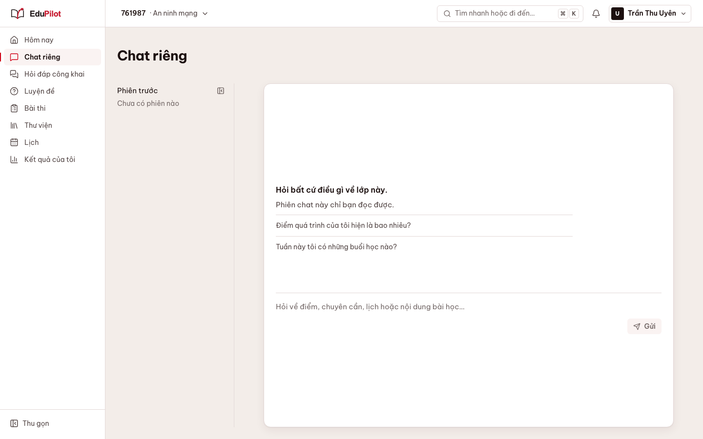
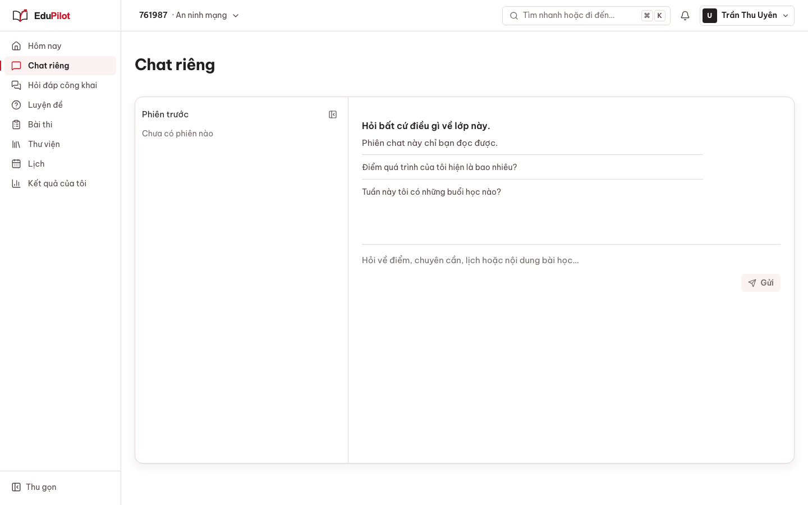
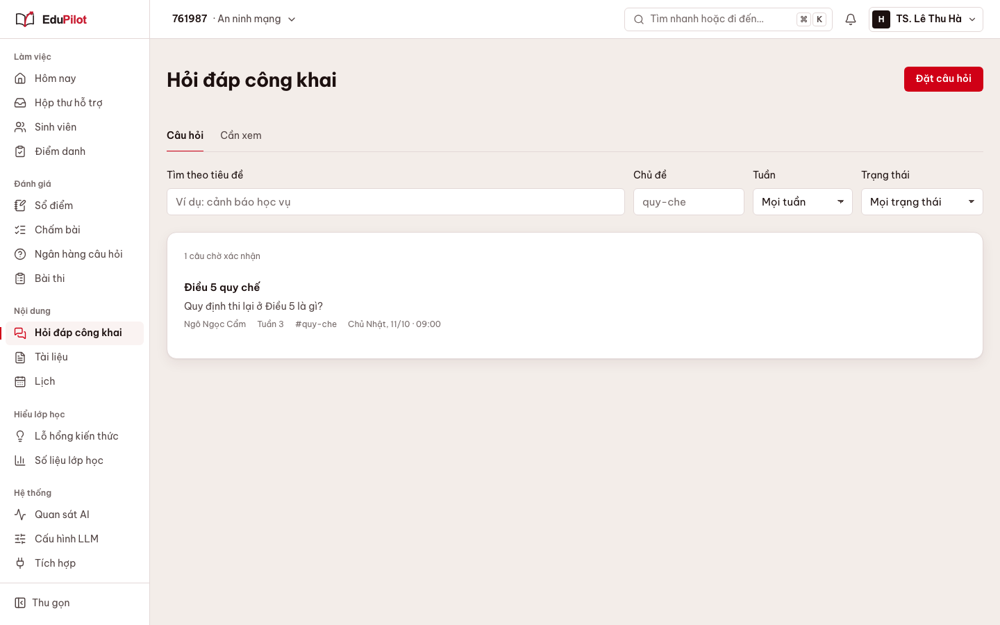
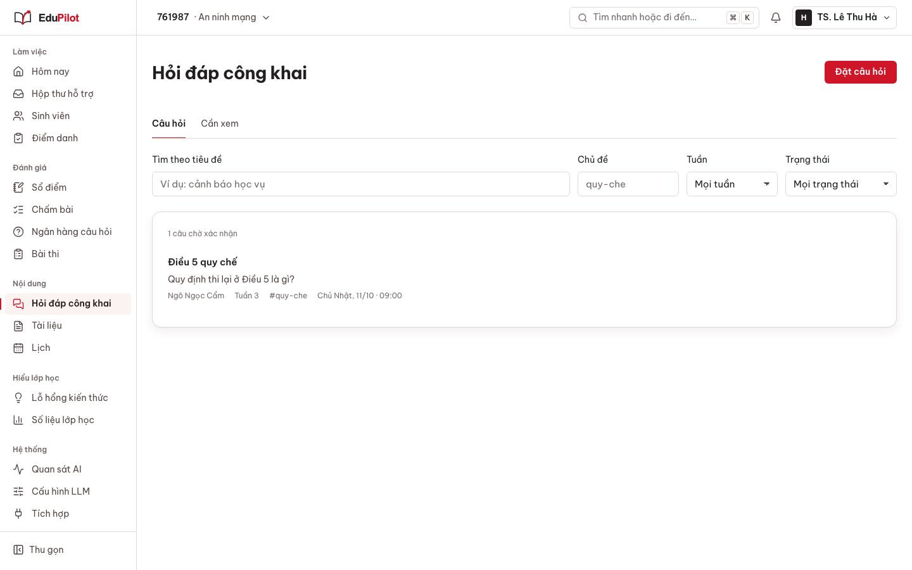
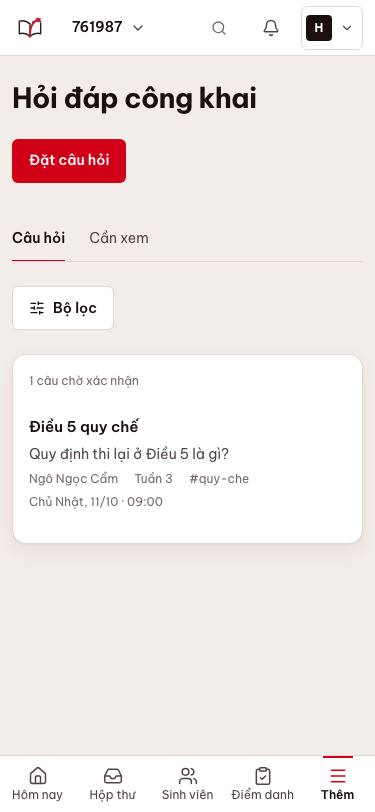
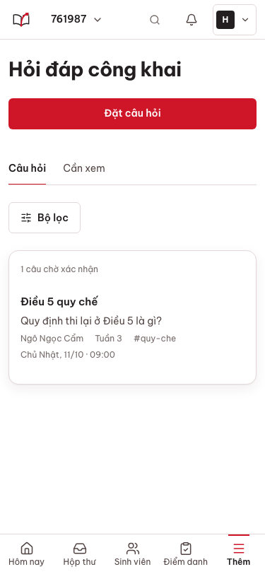
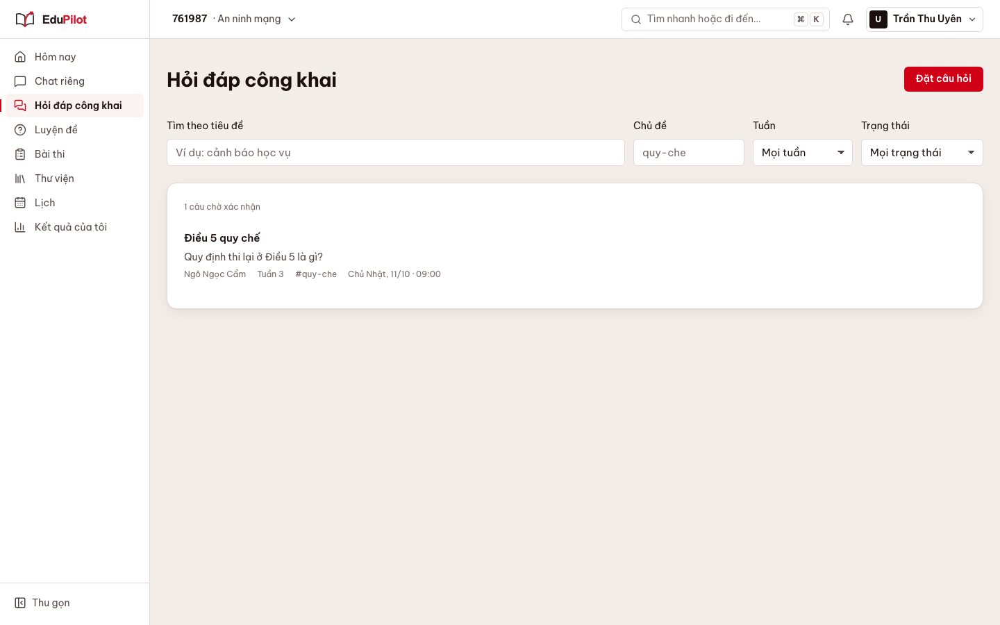
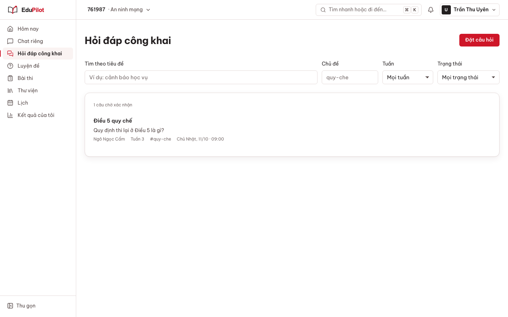

Sprint 10.7 lô 2 — trước / sau (ảnh Playwright, dữ liệu mô phỏng)
chat-1440

Trước (main @ 10.6)
Sau (sprint/10.7-ui-r)chat-375
Trước (main @ 10.6)Sau (sprint/10.7-ui-r)
threads-1440

Trước (main @ 10.6)
Sau (sprint/10.7-ui-r)threads-375

Trước (main @ 10.6)
Sau (sprint/10.7-ui-r)threads-sv-1440

Trước (main @ 10.6)
Sau (sprint/10.7-ui-r)threads-sv-375
Trước (main @ 10.6)Sau (sprint/10.7-ui-r)